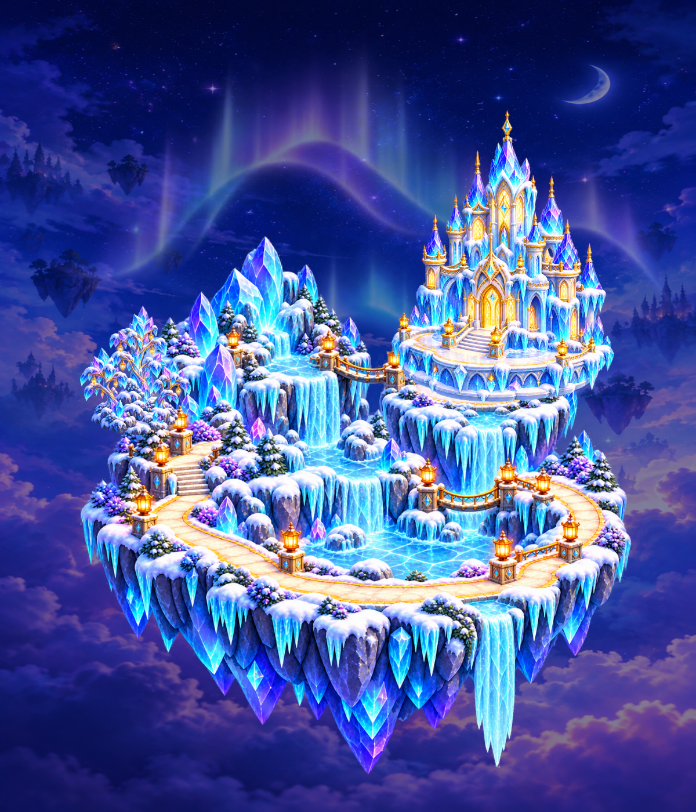
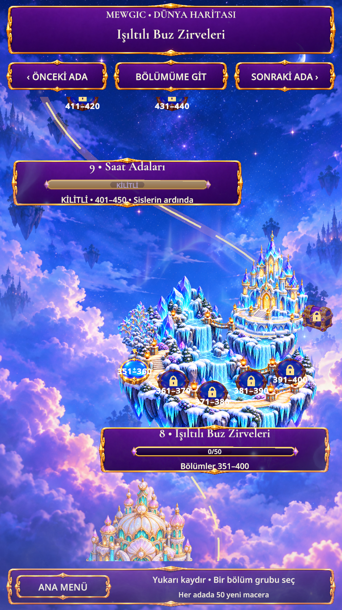

Gerçek proje referansı ve gerçek Unity çıktıları. Soğuk safir/turkuaz/mor, karlı kaya derinliği, kristal dağlar, bağımsız altın ışıklı buz sarayı/ağaçlar ve düşük alpha aurora. İlk taslakta kristal tuval kenarına değdi; son tabanda saydam boşluk ve donmuş yüzeyler düzeltildi.


Yumuşak 3D illüstrasyon, ışıklı mimari, köprüler, altın vurgular, uçan ada derinliği ve parlak düğümler korunur. Harita mevcut beş adet onluk grup arayüzünü kullanır; referanstaki tekil yol düğümlerinin piksel kopyası değildir. İsim paneli alt kayanın bir kısmını örter. Donmuş şelale şekilleri statiktir; yalnız ayrı buz ışığı taraması vardır. Kar seyrektir; dramatik kar fırtınası veya gerçek zamanlı okyanus/buz simülasyonu yoktur.
9:19.5 · 9:20 + dar Safe Area · Gerçek bölüm seçicisi · 400→401 · Teknik rapor